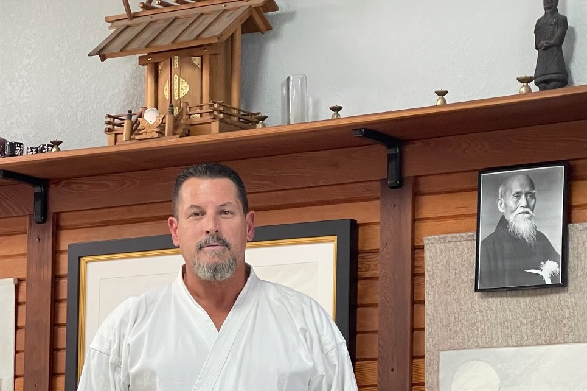

Aiki Budo of Denver
Instructors
Bruce Heckathorn Sensei, Chief Instructor (Shidoin)
Bruce Heckathorn began his study of Iwama-Ryu Aikido in the mid 1990s. He is the creator of the sword discipline of Sekkin Sen Kenjutsu. Presently, Bruce is a student of both Hiroshi Ikeda Shihan and Mitsugi Saotome Shihan, and holds the rank of Godan (5th degree black belt).
Bruce's 40 years of martial arts training began in the 1980s while serving in the United States Air Force as a member of the 2nd Combat Comm Group of the Tactical Air Command. He was awarded the Air Force meritorious achievement medal. He is also a small arms expert and has trained in Tae Kwon Do, Boxing, Ninjutsu, Systema, and BJJ.
Vimesh Patel, Assistant Instructor (Fuku Shidoin)
Vimesh started participating in martial arts at the age of 15. He studied Isshinryu Karate, Goju-ryu Karate, Kenpo Karate, combat Judo, sport Judo, and Ninjitsu, before discovering Iaido and Aikido. He holds a Green belt rank in Isshinryu Karate, a Yellow belt rank in Judo, a Shodan rank (first degree black belt) in Kenpo Karate, a Green belt rank in Ninjitsu, and a Nidan (second degree black belt) rank in Aikido. He also has about 5 years of experience in Iaido.
Eric Laverdiere, Assistant Instructor (Fuku Shidoin)
Eric started Aikido under Albright Sensei in 2011 and holds the rank of Sandan (third degree black belt). He also has about 7 years of experience in Iaido, and experience in both Karate and Kendo.
Luis Rodriguez-Rullan, Assistant Instructor
Luis started Aikido under Charles Harney Sensei in 1999 and holds the rank of Nidan (second degree black belt).